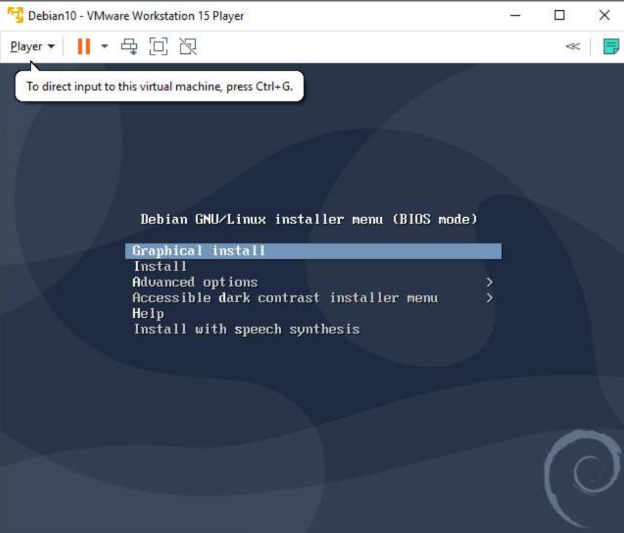
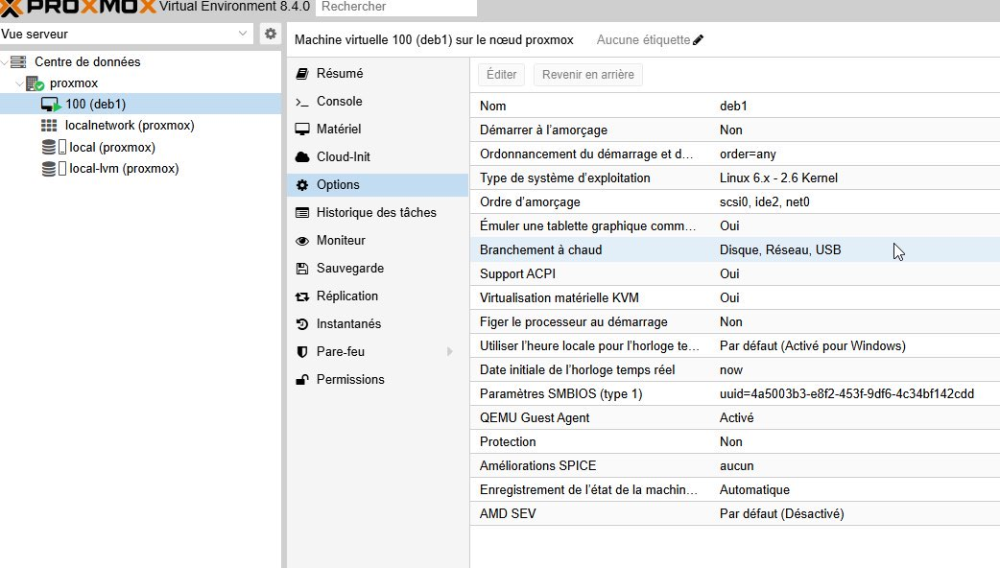
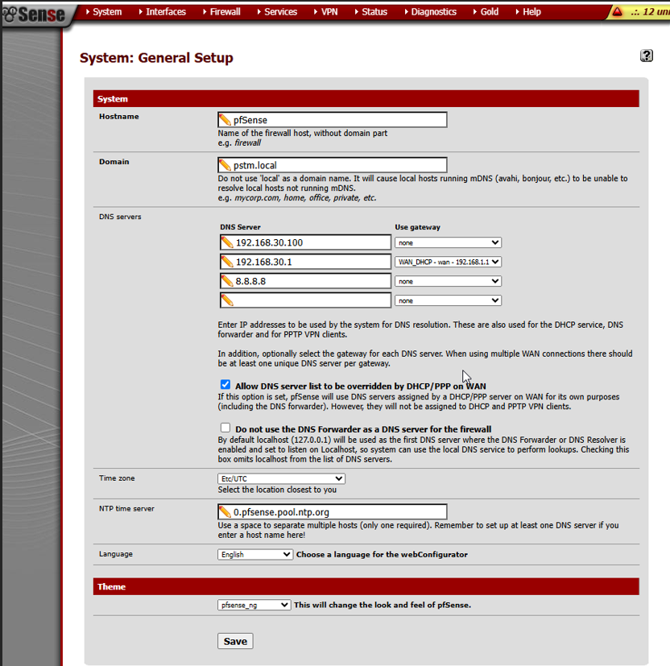
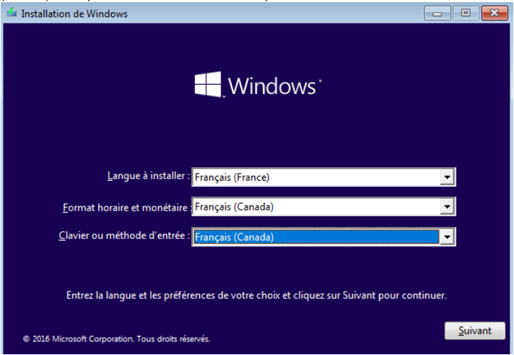
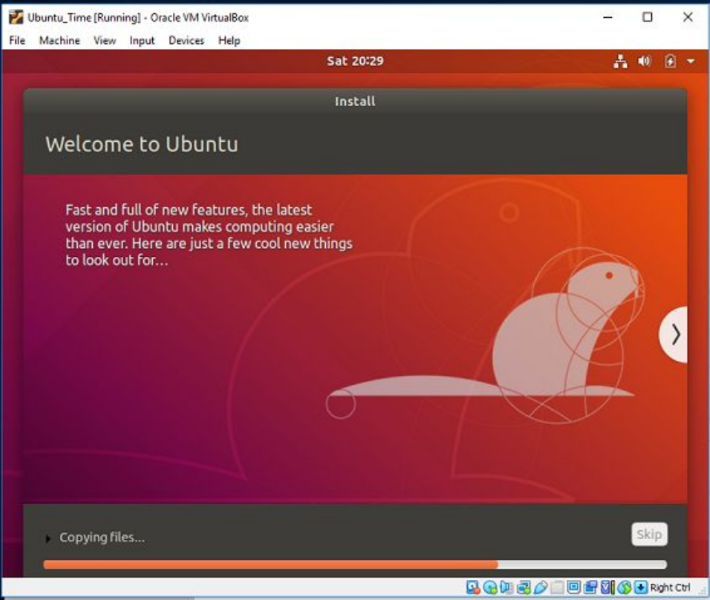
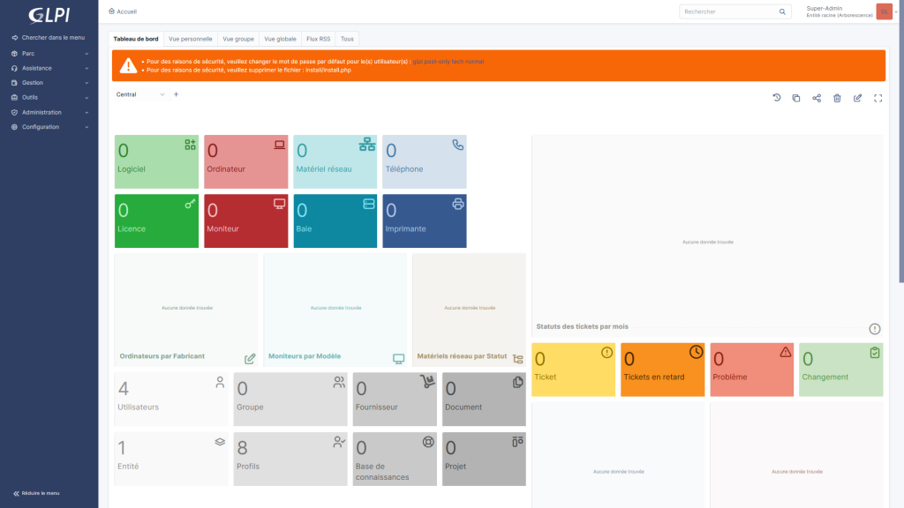
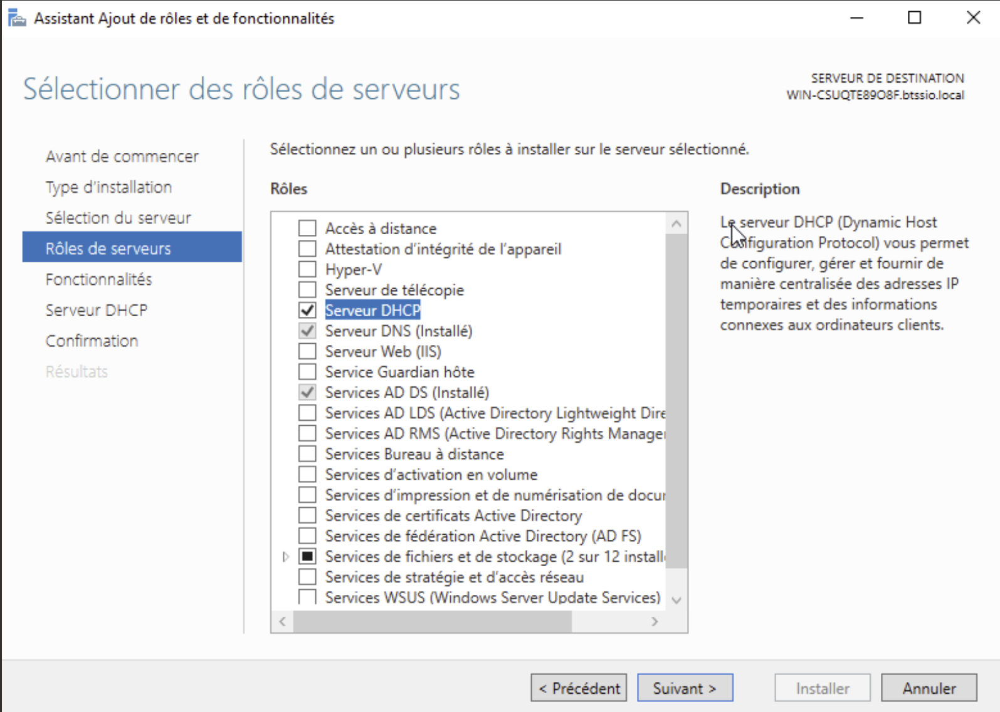
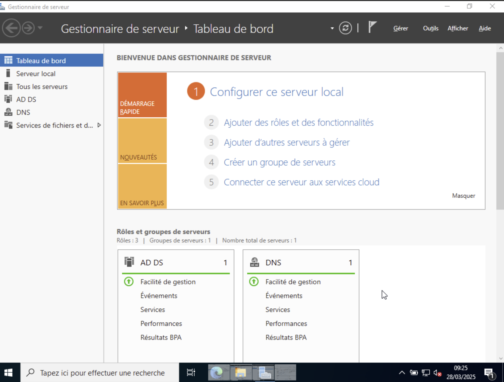
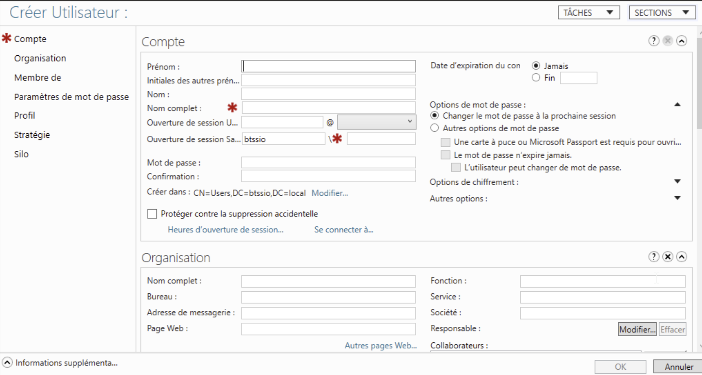

Bonjour,
Je m'appelle Anwar ZOUIOULA
Etudiant en BTS SIO option SLAM
Contact
A Propos
Je m'appelle Anwar
Anwar Zouioula, 20 ans, actuellement étudiant en BTS SIO option SLAM à H3 Hitema, Paris, je me forme en alternance au sein de Mk Tendos, une entreprise de télécommunications. Passionné par le développement et les technologies informatiques, j’allie théorie et pratique pour acquérir une expertise solide. À travers ce portfolio, je vous invite à découvrir mon parcours académique et professionnel, ainsi que les projets que j’ai réalisés. Vous y trouverez également mon CV et un aperçu de mes compétences. Bonne visite !
Qu'est-ce que le BTS SIO ?
Qu'est-ce que le BTS SIO ?
Le BTS SIO (Services Informatiques aux Organisations) est un diplôme de niveau Bac+2. Il forme des experts en informatique, compétents aussi bien en développement qu'en administration et maintenance des réseaux informatiques.
Le BTS SIO propose deux options :
Option SISR
L’option Solutions d’infrastructure, systèmes et réseaux prépare des spécialistes en réseaux et équipements informatiques (installation, maintenance, sécurité). En obtenant un BTS SIO option SISR, vous serez en mesure de gérer et administrer le réseau d’une organisation tout en garantissant sa sécurité et sa maintenance.
Les titulaires du BTS SIO option SISR peuvent exercer les métiers suivants :
- Administrateur systèmes et réseaux
- Informaticien support et déploiement
- Pilote d’exploitation
- Support systèmes et réseaux
Option SLAM
L’option Solutions logicielles et applications métiers forme des spécialistes des logiciels (rédaction d’un cahier des charges, formulation des besoins et spécifications, développement, intégration au sein de la société).
Les techniciens supérieurs en informatique option SLAM sont préparés aux métiers de :
- Développeur d’applications informatiques
- Développeur informatique
- Analyste d’applications ou d’études

– EXPÉRIENCES PROFESSIONNELLES
Compétences
Développement Web & Mobile
Bases de données
Virtualisation & Réseaux
Tableau de synthèse
Télécharger le tableau (.pdf)Documents & Réalisations
Installation et configuration sur des machines :
En 2024-2025, j’ai réalisé L’installation et configuration sur des machines virtuelles sur( Proxmox VE, Debian, Ubuntu, pfSense, Windows, Linux)




Installation GLPI :
En 2024-2025, j’ai réalisé l’installation GLPI sur la machine vertuelle (linux Debian12)
Installation GLPI (.pdf)
L’installation et la gestion d’Active Directory (AD DS) :
En 2024-2025, j’ai réalisé L’installation et la gestion d’Active Directory (AD DS) sur un serveur Windows, avec un accent particulier sur les rôles de service AD DS et DNS.


Projets Personnels Encadrés
StampCollector
StampCollector est un site web interactif dédié aux passionnés de philatélie, permettant d’explorer, organiser et partager des collections de timbres. Développé en HTML, CSS et JavaScript, il offre une interface fluide et intuitive pour une navigation optimisée. Le site permet de classer les timbres par pays, facilitant ainsi la gestion des collections.

Site E-commerce
E_shop est un site web e-commerce dédié à la vente de matériel technologique, permettant aux utilisateurs de parcourir, sélectionner et acheter divers produits high-tech. Développé en PHP, avec une base de données MySQL gérée via phpMyAdmin, il assure une gestion dynamique et sécurisée des données. Stylisé avec CSS, le site offre une interface claire et ergonomique pour une navigation optimisée. E_shop est hébergé en local à l’aide de XAMPPServer, offrant un environnement complet de développement et de test.

Site MK Tendos
est un site web vitrine dédié à la présentation de l’entreprise MK Tendos, spécialisée dans les solutions de télécommunications. Développé en HTML et stylisé avec CSS, il offre une interface professionnelle, claire et responsive pour une navigation fluide. Le site met en avant les services proposés par l’entreprise ainsi que ses réalisations, permettant aux visiteurs de découvrir l’expertise de MK Tendos en un coup d’œil.

GestionE_shop
GestionE_shop est une application de gestion développée en C#, conçue pour administrer le site e-commerce E_shop. Elle permet d’effectuer l’ajout, la suppression et la modification de données de façon intuitive. Connectée à la base de données MySQL utilisée par le site, chaque action réalisée via l’application est directement répercutée dans la base de données du site E_shop. Cette interaction assure une mise à jour instantanée des produits, catégories et informations visibles en ligne.

Interface Admin – E_shop
L’interface administrateur du site e-commerce E_shop est un espace sécurisé dédié à la gestion complète de la boutique en ligne. Accessible uniquement aux administrateurs, elle permet d’ajouter, modifier ou supprimer des produits, gérer les catégories, consulter les commandes passées et suivre les utilisateurs inscrits. Développée en PHP et stylisée avec CSS, cette interface est directement reliée à la base de données MySQL via phpMyAdmin, assurant une mise à jour instantanée des informations visibles sur le site public.
Site E-commerce


Site de vente en ligne de matériel électronique. PHP/MySQL/HTML/CSS.
MK Tendos


Site vitrine pour entreprise télécom. HTML/CSS/JS Responsive.
GestionE_shop


Application de gestion pour ajouter, modifier et supprimer des données. Développée en C# avec connexion à MySQL.
Interface Admin – E_shop


Interface admin pour gérer produits et commandes. Développée en PHP/CSS avec base de données MySQL.
Veille Technologique
L’intelligence artificielle dans les assistants vocaux
Les assistants vocaux comme Siri, Alexa et Google Assistant utilisent l’intelligence artificielle pour comprendre et répondre aux demandes des utilisateurs. Grâce au machine learning, ils s’améliorent avec le temps et peuvent exécuter des tâches comme envoyer des messages, donner la météo ou contrôler des objets connectés. Cette technologie continue d’évoluer pour rendre les interactions plus naturelles et efficaces.
Télécharger ma Veille Technologique
Contact
anwar132005@gmail.com
+33 6 02 54 04 65